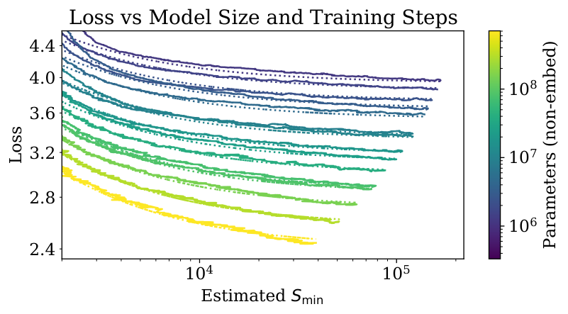
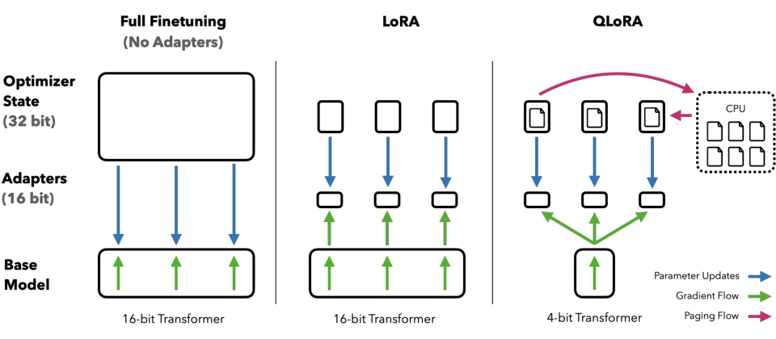

第 1 章 数学基础与优化理论
💡 本章导读
训练一个多模态大模型，本质上是在一个数十亿维的参数空间里沿着一条精心设计的轨迹下降。本章不讲"数学欣赏"，只讲多模态工程师每天都会用到的那部分数学：SVD 告诉你为什么 LoRA 能用两个低秩矩阵压缩微调量、为什么 CLIP 特征存在"模态间隙"；KL 散度与交叉熵是几乎所有训练目标的底层构件；SGD→AdamW 的四十年优化器演进决定了你该给训练脚本传哪个 optim="..."；混合精度与 Muon 优化器则是 2024–2026 年大模型训练的两个最热话题。所有推导不跳步，所有公式配符号解释。学完本章，第 12 章的 InfoNCE 推导、第 24 章的扩散推导、第 36 章的 LoRA 梯度推导都会变成"水到渠成"。
1.优化的视角：训练就是"把损失曲线推低"
先把全书反复出现的一句话写在这里：模型训练 = 在数据分布上最小化一个损失泛函。对语言模型，损失是负对数似然（Negative Log-Likelihood, NLL）：
其中 $\theta$ 是全部参数（GPT-3 有 $175\times 10^9$ 个），$\mathcal{D}$ 是训练分布。深度学习实践中我们从不真正"求解"这个优化问题（它非凸、病态、极高维），而是用一阶随机迭代方法：沿着小批量（mini-batch）估计出的梯度方向小步更新，迭代几万到几百万次。Kaplan 等人 2020 年的 Scaling Laws 论文（arXiv:2001.08361）给出了一个惊人的实验事实：测试损失随计算量、参数量、数据量按平滑的幂律下降——这说明"优化"在相当大的范围内是可预测的工程问题，而不是碰运气。

沿着这个视角，本章回答四个层层递进的问题：（1）损失 landscape 长什么样，为什么线性代数工具（SVD）能看穿它？（2）我们用哪个概率度量定义"损失"？（3）沿什么方向、多大步长更新（优化器）？（4）在有限显存下怎么算得又快又稳（精度与数值技巧）？最后一节补上 2024 年之后的新答案：Muon 优化器。
🕰 历史一刻：优化器的六十年接力
随机近似思想可以追溯到 Robbins–Monro（1951）；带动量的 SGD 在 Polyak（1964）与 Rumelhart 等人反向传播论文（1986）中定型；AdaGrad（Duchi et al., JMLR 2011）首次引入"每个参数自己的学习率"；RMSProp 出自 Hinton 2012 年的 Coursera 讲义（从未正式发表）；Adam（Kingma & Ba, ICLR 2015，arXiv:1412.6980）把二者合体成为默认选项；AdamW（Loshchilov & Hutter, ICLR 2019，arXiv:1711.05101）用一个字符的改动修好了 Adam 与权重衰减的兼容性；2024 年 Keller Jordan 在 NanoGPT speedrun 中提出的 Muon 又把目光拉回"矩阵的结构"。你会发现：优化器的主线剧情就是在"通用性"与"利用问题结构"之间反复摇摆。
2.线性代数速览：特征值、SVD 与多模态子空间
2.1 特征分解与条件数：损失面的"地形图"
对于实对称方阵 $A \in \mathbb{R}^{n \times n}$，谱定理保证它可以正交对角化：存在正交矩阵 $Q$（$Q^\top Q = I$）与实数 $\lambda_1 \ge \lambda_2 \ge \dots \ge \lambda_n$，使
$\lambda_i$ 称为特征值（Eigenvalue），对应的 $Q$ 的列称为特征向量（Eigenvector）。直觉：$A$ 作用在特征方向上只是"缩放 $\lambda_i$ 倍"，不改变方向。在优化里，损失函数在极小点附近的 Hessian 矩阵（二阶导）近似为对称半正定，它的特征值刻画了各个主方向的曲率：最大与最小特征值之比 $\kappa = \lambda_{\max}/\lambda_{\min}$ 叫条件数（Condition Number）。$\kappa$ 大（病态，ill-conditioned）意味着损失面是一个"狭长的峡谷"：谷底方向很平（可以大步走），垂直方向很陡（必须小步走），而朴素的 SGD 只有一个步长——这就是 SGD 在深度网络里走"之"字形抖动的数学根源。
2.2 奇异值分解（SVD）：任意矩阵的"频谱"
深度学习里最常见的矩阵不是对称方阵，而是形状任意的权重矩阵 $W \in \mathbb{R}^{m \times n}$。对任意实矩阵，奇异值分解（Singular Value Decomposition, SVD）恒成立：
符号含义：$U \in \mathbb{R}^{m\times m}$、$V \in \mathbb{R}^{n\times n}$ 是正交矩阵，列向量 $\mathbf{u}_i,\mathbf{v}_i$ 分别称左、右奇异向量；$\Sigma$ 是 $m \times n$ 的"对角"矩阵，对角元 $\sigma_1 \ge \sigma_2 \ge \dots \ge \sigma_r \ge 0$ 称奇异值（Singular Value）。它与特征分解的关系：$W^\top W = V\Sigma^\top\Sigma V^\top$，即奇异值是 $W^\top W$ 特征值的平方根。第二个等价写法（秩 1 矩阵之和）最为常用——它告诉我们：任何线性变换都可以拆成"投影→缩放→投影"的叠加，而 $\sigma_i$ 就是每一层的缩放强度。
SVD 最有用的定理是 Eckart–Young–Mirsky 定理：在 Frobenius 范数下，秩不超过 $k$ 的矩阵中最接近 $W$ 的是截断 SVD $W_k = \sum_{i\le k}\sigma_i \mathbf{u}_i\mathbf{v}_i^\top$，且最优误差可精确写出：
推导要点（两步）：先证 Frobenius 范数在正交变换下不变（$\|U^\top X V\|_F = \|X\|_F$），故可把问题旋转到 $\Sigma$ 的坐标系里；再证对角矩阵在固定秩约束下的最优逼近就是"把最小的奇异值清零"——因为 $\| \Sigma - B'\|_F^2 = \sum_i (\sigma_i - b'_{ii})^2 + \sum_{i \ne j} b_{ij}'^2$，交叉项只会添乱，置零即可。这个定理是理解 LoRA 的钥匙。
📐 理论推导：为什么 LoRA 的"低秩更新"假设成立
LoRA（Low-Rank Adaptation，Hu et al., arXiv:2106.09685）假设微调大模型时权重的变化量 $\Delta W = W_{\text{finetuned}} - W_{\text{pretrained}}$ 是低秩的，于是用两个瘦矩阵的乘积表示它：$\Delta W = BA$，其中 $B\in\mathbb{R}^{m\times r}, A\in\mathbb{R}^{r\times n}, r \ll \min(m,n)$。论证链条：
第一步（信息论上界）：微调数据集只有 $N$ 条样本（比如几万条指令），而 $\Delta W$ 有 $m\times n$ 个自由参数（比如 $4096\times 4096 = 1.6\times 10^7$）。参数量远大于样本信息量时，可拟合的"有效自由度"受数据瓶颈约束，实际被驱动的方向数目 $O(N)$ 量级。
第二步（经验观察）：LoRA 原文与后续分析（如 "The Impact of Initialization" 等工作）在多个任务上检查 $\Delta W$ 的奇异值谱，发现能量（奇异值平方的累积占比）高度集中在极少数方向上——$r=1,2,4$ 就能恢复大部分更新。
第三步（Eckart–Young 兜底）：即便 $\Delta W$ 不是严格低秩，用秩 $r$ 逼近的误差就是被丢弃的奇异值平方和 $\sum_{i>r}\sigma_i^2$。若谱衰减快（幂律谱是大模型权重矩阵的普遍形态），这个误差很小。下图（LoRA 原文）直接展示了不同 $r$ 学到的子空间高度重叠。
同样的谱视角还解释了第 7 节的 Muon：与其让每个标量参数独立自适应，不如直接把更新矩阵的奇异值拉平，让所有方向匀速推进。

2.3 多模态子空间：模态间隙与共享子空间
SVD 在多模态领域还有一个更宏观的用法：分析两个特征空间的几何关系。把一批图像特征堆成矩阵 $X \in \mathbb{R}^{N\times d}$、对应文本特征堆成 $Y \in \mathbb{R}^{N\times d}$（如 CLIP 的双塔输出），对互协方差矩阵 $X^\top Y$ 做 SVD，最大的几个奇异方向就是两个模态最"共享"的语义子空间——这正是 1936 年 Hotelling 提出的典型相关分析（Canonical Correlation Analysis, CCA）的核心，也是第 10 章"联合表示 vs 协调表示"的数学骨架。2023 年后的研究（第 10、12 章详述）用同样的工具发现了模态间隙（modality gap）现象：CLIP 的图像特征与文本特征各自聚成两个锥体，中间存在系统性空隙——把两组特征各自中心化后做 PCA，第一主成分方向几乎就是"模态"本身。理解了这些，你就明白为什么很多论文在做跨模态实验前先做"中心化 + 白化（whitening，把各方向的方差归一，等价于把协方差矩阵变成 $I$）"预处理。
import torch
torch.manual_seed(0)
d, N, r_true = 512, 4096, 16
# 模拟"共享低维语义 + 模态私有噪声"的双模态特征
z = torch.randn(N, r_true) # 潜在共享语义（真秩 16）
Wx = torch.randn(d, r_true) / r_true**0.5 # 图像塔的语义投影
Wy = torch.randn(d, r_true) / r_true**0.5 # 文本塔的语义投影
X = z @ Wx.T + 0.3 * torch.randn(N, d) # 图像特征
Y = z @ Wy.T + 0.3 * torch.randn(N, d) # 文本特征
Xc, Yc = X - X.mean(0), Y - Y.mean(0) # 中心化（消除模态间隙的均值部分）
C = Xc.T @ Yc / (N - 1) # 互协方差矩阵 C ∈ R^{512×512}
U, S, Vh = torch.linalg.svd(C) # SVD：torch.linalg.svd 返回 U, S, V^H
energy = S**2 / (S**2).sum() # 每个方向的能量占比
cum = torch.cumsum(energy, 0)
print("前 16 个方向的累计能量占比:", round(cum[15].item(), 4))
# 输出约 0.95+：尽管特征是 512 维，跨模态语义集中在一个 16 维子空间
print("奇异值谱衰减（前 8 个）:", [round(v, 3) for v in S[:8].tolist()])这段代码的输出可以直接复现一个结论：跨模态语义子空间的有效维度 ≈ 潜在语义维度，而不是特征维度。后续章节的许多设计（对比学习把表示拉进共享子空间、白化连接器、低秩微调）都是这条数学事实的工程投影。
3.概率与信息论：交叉熵、KL 散度与互信息
3.1 从熵到交叉熵：语言模型的目标函数从哪来
离散随机变量 $X \sim p$ 的香农熵（Entropy）定义为 $H(p) = -\sum_x p(x)\log p(x)$（约定 $0\log 0 = 0$），单位为 nat（取自然对数时）。它度量"平均最优编码长度"：熵越高，不确定性越大。用分布 $p$ 的真实数据去检验一个模型分布 $q$，得到的平均编码长度是交叉熵（Cross-Entropy）：
大语言模型的训练目标正是逐 token 的交叉熵：真实分布是数据本身（one-hot 的下一个词），模型分布是 softmax 输出 $p_\theta(\cdot \mid x_{\lt t})$，于是
困惑度（Perplexity, PPL）就是交叉熵的指数化，可解读为"模型在每个位置上平均在多少个词里犹豫"。一个重要事实：语言数据自身的熵远大于 0（英语文本估计在 0.6–1.3 nat/token 量级），所以交叉熵永远不会收敛到 0，模型学到的是不可约熵之上的那部分结构。
3.2 KL 散度：两个分布的"距离"（虽然不是距离）
KL 散度（Kullback–Leibler Divergence，相对熵）定义为一个分布相对另一个分布的额外编码开销：
它不是对称的（$D_{\mathrm{KL}}(p\|q) \neq D_{\mathrm{KL}}(q\|p)$），也不满足三角不等式，所以不是距离；但它非负，且等于 0 当且仅当 $p=q$。这是全书引用频率最高的不等式之一，值得把证明完整走一遍（Gibbs 不等式）：
证明：记 $A = D_{\mathrm{KL}}(p\|q) = -\sum_x p(x)\log\frac{q(x)}{p(x)}$。对数函数是凹函数，由 Jensen 不等式，$\mathbb{E}[\log Z] \le \log \mathbb{E}[Z]$，其中随机变量 $Z = q(x)/p(x)$ 按 $p$ 取期望：
等号成立当且仅当 $Z$ 是常数，即 $p(x) \propto q(x)$，结合归一化即 $p=q$。$\blacksquare$
把交叉熵与熵相减立刻得到全书最重要的恒等式之一：
它有两个直接推论。推论一：训练时固定数据分布 $p$，最小化交叉熵等价于最小化 KL 散度——所以"分类任务用交叉熵损失"不是人为约定，而是在做最大似然估计（MLE）。推论二：KL = CE − H 为非负量，它把"模型不好"拆成两部分：数据固有噪声（$H(p)$，不可消除）+ 模型分布与数据的偏离（$D_{\mathrm{KL}}$，可优化部分）。变分推断（VAE 的 ELBO，第 23 章）、蒸馏（学生逼近教师）、策略优化（PPO 里限制策略漂移，第 37 章）本质上全在操控某一对 $p,q$ 的 KL。
3.3 互信息：对比学习的理论地基
互信息（Mutual Information, MI）衡量两个随机变量共享多少信息，定义为一对分布之间的 KL 散度：
由 KL 的非负性立刻得到 $I(X;Y)\ge 0$，等号当且仅当 $X,Y$ 独立。用条件熵改写（利用 $p(x,y) = p(y|x)p(x)$ 与贝叶斯公式展开即可验证）：
解读："知道 $Y$ 之后 $X$ 的不确定性减少了多少"。对比学习的纲领性思想是：好的多模态表示应当让配对的图文互信息尽可能大——图像与其描述文本共享"同一场景"的信息，$I(\text{image};\text{text})$ 应显著大于不相关图文对的互信息。CLIP 的 InfoNCE 损失正是互信息的一个可优化下界。下面把下界的关键推导先行给出，第 12 章会再完整精读。
📐 理论推导：InfoNCE 是互信息的下界（van den Oord et al., 2018）
设置：从联合分布抽 1 个正样本对 $(x_i, y_i)$，再抽 $N-1$ 个负样本 $y_j$（$j \ne i$，与 $x_i$ 独立）。判别任务：给定 $y_1,\dots,y_N$ 与 $x_i$，找出哪个 $y$ 是真配对。设 $L_N$ 为该 $N$ 分类任务的最优交叉熵。
第一步：最优判别器是密度比。先验均匀 $P(\text{正样本是 } j) = 1/N$，由贝叶斯公式，第 $j$ 个候选是真配对的后验概率
分子分母同除边缘密度 $p(y_j)$，可见最优打分函数正比于密度比 $\frac{p(y|x)}{p(y)}$——这就是为什么对比学习的打分函数（余弦相似度）天然逼近"配对性"。
第二步：拆解互信息。对正样本对有 $I(X;Y) = \mathbb{E}\big[\log\frac{p(y_i|x_i)}{p(y_i)}\big]$。把 $p(y_i)$ 用同一批候选的经验平均 $\hat p(y) = \frac{1}{N}\sum_k p(y_k|x_i)$ 近似（这是唯一引入近似的步骤，$N$ 越大越准），代换得
第三步：取期望得到下界。对两侧取期望，右边第二项正是负的 $N$ 分类交叉熵 $-L_N$（用最优判别器时），于是
结论：最小化 InfoNCE 损失 $L_N$ ⇔ 推高互信息下界 $\log N - L_N$。 batch 大小 $N$ 越大，下界越紧、负样本提供的信息越多——这解释了 CLIP 用 32768 的超大 batch、以及为什么对比学习对 batch 内负样本质量如此敏感（假阴性问题留到第 12 章）。$\blacksquare$
import torch
import torch.nn.functional as F
torch.manual_seed(0)
logits = torch.randn(8, 10, requires_grad=True) # 未归一化的打分（8 个样本，10 类）
target = torch.tensor([3, 0, 7, 5, 9, 1, 2, 6]) # 真实类别
# 手写交叉熵：等价于 F.cross_entropy，看清"log_softmax + 取数 + 平均"三步
log_probs = F.log_softmax(logits, dim=-1) # 稳定实现：内部用 log-sum-exp 技巧
ce_manual = -log_probs[torch.arange(8), target].mean()
ce_builtin = F.cross_entropy(logits, target)
print(ce_manual.item(), ce_builtin.item()) # 两者一致
# 数值稳定性陷阱演示：直接按定义算 softmax 再取 log 会溢出/精度损失
x_big = torch.tensor([1000.0, 1001.0, 999.0])
try:
p = torch.softmax(x_big, dim=0); print(torch.log(p))
except Exception as e:
print("溢出：", e)
# 正确姿势：log_softmax 不会指数上溢，因为减去了 max
print(F.log_softmax(x_big, dim=0))
# KL 散度：注意 PyTorch 约定 input=log q, target=p，且顺序不可反
p_dist = torch.tensor([0.9, 0.1]); q_dist = torch.tensor([0.5, 0.5])
kl_pq = F.kl_div(q_dist.log(), p_dist, reduction="sum") # D_KL(p || q)
print("D_KL(p||q) =", kl_pq.item()) # ≈ 0.3681⚠️ 陷阱：手写 softmax 与 KL 的经典翻车点
（1）永远不要按定义 $\frac{e^{x_i}}{\sum_j e^{x_j}}$ 裸算 softmax：logits 过千（FP16 下过 11 就危险）时指数直接溢出。工业实现都是"减最大值 + log-sum-exp"。（2）F.kl_div(input, target) 的语义是 $D_{\mathrm{KL}}(\text{target}\,\|\,\text{input})$ 且 input 需要传对数概率——参数顺序与传 log 这两点每年都让大量训练脚本静默出错（不报错但数值错）。（3）交叉熵损失与"先 softmax 再 NLLLoss"等价，但后者会经历一次多余的指数运算，且在 FP16 下更易出 NaN：直接用 cross_entropy 或 log_softmax。
4.优化器演进：从 SGD 到 AdamW 的完整推导
一阶优化方法共用一个骨架：维护一个"更新方向" $\mathbf{u}_t$，按 $\theta_{t+1} = \theta_t - \eta_t \mathbf{u}_t$ 更新。四十年演进的全部内容，就是如何用历史的梯度信息把 $\mathbf{u}_t$ 造得更好。设第 $t$ 步的小批量梯度为 $\mathbf{g}_t = \nabla_\theta \mathcal{L}(\theta_t; \mathcal{B}_t)$。下面按时间线逐一推导，每一步都看清"它到底想修什么病"。
（1）SGD（随机梯度下降）：最朴素的选择 $\mathbf{u}_t = \mathbf{g}_t$。小批量梯度是无偏估计（$\mathbb{E}[\mathbf{g}_t] = \nabla\mathcal{L}(\theta_t)$），但方差大；在条件数大的谷地上，垂直于谷底方向的梯度分量远大于沿谷底方向的分量，固定步长要么导致横跨峡谷的剧烈振荡，要么沿谷底缓慢爬行。
（2）动量（Momentum）：引入速度变量 $\mathbf{v}_t$，把历史梯度指数加权平均：
展开递推式可见 $\mathbf{v}_t = \sum_{i=1}^{t}\beta^{t-i}\mathbf{g}_i$：若梯度方向持续一致，有效步长被放大 $1/(1-\beta) = 10$ 倍；若方向交替翻转（振荡分量），正负抵消、平均趋于零。它等价于在振荡方向上做了低通滤波。Nesterov 动量（NAG）改进为"先按惯性走一步再算梯度"：$\mathbf{g}_t = \nabla\mathcal{L}(\theta_t - \eta\beta\mathbf{v}_{t-1})$，在凸问题上有更优的收敛速率，实践中略优于普通动量。
（3）AdaGrad：给每个参数坐标单独的步长——累计平方梯度作为分母：
其中 $\odot$ 是逐元素乘。梯度一直很大的坐标被自动刹车，稀疏梯度（如词嵌入的低频词）得到大步长——这对 NLP 是天大的好事。致命缺陷：$\mathbf{G}_t$ 单调递增，学习率随时间单调衰减到零，长训练后期"学不动了"。
（4）RMSProp：把"累计"改成"指数滑动平均"，遗忘久远历史：
（5）Adam：同时保留一阶滑动平均（动量的遗产）与二阶滑动平均（RMSProp 的遗产），再加上偏差修正。完整推导见下方理论盒子。
📐 理论推导：Adam 的偏差修正与有效步长（arXiv:1412.6980）
更新规则（$\beta_1 = 0.9$，$\beta_2 = 0.999$，$\epsilon = 10^{-8}$）：
第一步：展开一阶矩。由 $\mathbf{m}_0 = 0$ 递推展开：
第二步：计算期望。假设梯度平稳（$\mathbb{E}[\mathbf{g}_i] = \bar{\mathbf{g}}$ 与 $i$ 无关），对上式取期望：
这里用了等比数列求和 $\sum_{i=1}^{t}\beta^{t-i} = (1-\beta^t)/(1-\beta)$。可见 $\mathbf{m}_t$ 是 $\bar{\mathbf{g}}$ 的有偏估计，偏差因子恰为 $1-\beta_1^t$：训练初期 $t$ 小、$\mathbf{m}_t$ 被"冷启动"压得偏小（例如 $t=1$ 时 $\mathbb{E}[\mathbf{m}_1] = 0.1\,\bar{\mathbf{g}}$，只有真值的十分之一）。
第三步：修正。把估计除以偏差因子即得无偏估计，二阶矩同理（对 $\mathbf{g}_i \odot \mathbf{g}_i$ 平稳性假设下 $\mathbb{E}[\mathbf{v}_t] = (1-\beta_2^t)\mathbb{E}[\mathbf{g}\odot\mathbf{g}]$）：
第四步：有效步长的界。忽略 $\epsilon$，逐元素看更新量 $\Delta\theta_j = -\eta\, \hat m_j / \sqrt{\hat v_j}$。由 $\hat m_j^2 \le \widehat{(g^2)}_j$（一阶矩平方不超过二阶矩，Jensen 不等式），得 $|\Delta\theta_j| \le \eta$：Adam 的每步位移被硬性限制在 $[-\eta, \eta]$，与梯度绝对大小无关。这既是它稳定的原因（大梯度不炸），也是它"步幅受限"的局限（后期收敛精度不如 SGD）。
📄 论文精读：Adam（Kingma & Ba，ICLR 2015，arXiv:1412.6980）
问题：SGD 只有一个全局学习率；AdaGrad 单调衰减；RMSProp 没有一阶矩的动量且无偏差修正。方法：一阶矩（动量）+ 二阶矩（自适应）+ 双偏差修正，复杂度 $O(1)$ 额外内存（每参数 2 个状态）。关键结果：论文在 MNIST/IMDB/CIFAR 等小规模任务上展示 Adam 前几万步的收敛显著快于 SGD 动量；后续社区共识是"Transformer 类模型几乎必须用 Adam 系，CNN 分类用 SGD+动量泛化有时更好"。为什么重要：截至 2026 年，Adam/AdamW 是引用量最高的深度学习优化论文，是几乎所有 LLM/多模态训练脚本的默认 optim="adamw_torch"。延伸阅读：AdamW 修正、RAdam 对 $\mathbf{v}_t$ 早期方差的分析（arXiv:1908.03265）、Adafactor（arXiv:1804.04235）用低秩分解把二阶矩内存砍到 $O(d)$。
📐 理论推导：AdamW 为什么必须"解耦"权重衰减（arXiv:1711.05101）
传统做法（L2 正则）：在损失里加 $\frac{\lambda}{2}\|\theta\|^2$，等价于修改梯度 $\mathbf{g}_t \leftarrow \mathbf{g}_t + \lambda\theta_t$，然后交给 Adam。问题出在自适应分母：衰减项被卷进 $\mathbf{m}_t$ 与 $\mathbf{v}_t$，实际收到的衰减量是
梯度大的坐标 $\sqrt{\hat v_j}$ 大 → 正则被自动削弱；梯度小的坐标正则反而强。正则强度与梯度尺度纠缠，不同参数、不同训练阶段都不可控。
AdamW 的解耦：把衰减从梯度里拿出来，直接作用在权重上：
每步衰减比例 $\eta\lambda$ 与梯度无关，正则强度终于"名副其实"。实验上，AdamW 在 ImageNet 与 Transformer 语言建模上同时改善训练损失与泛化。实践铁律：LayerNorm/RMSNorm 参数、bias、以及 LoRA 的 $B$ 矩阵通常不施加 weight decay（第 36 章展开）。
| 优化器 | 年份 | 核心机制 | 自适应 | 状态内存 | 典型适用 |
|---|---|---|---|---|---|
| SGD | 1951/1986 | 沿小批量梯度下降 | 否 | 0× | CNN 分类、大规模视觉预训练 |
| SGD+动量 / NAG | 1964/1983 | 历史梯度指数平均 | 否 | 1× | CNN、ViT 大 batch 训练 |
| AdaGrad | 2011 | 累计平方梯度做分母 | 是 | 1× | 稀疏特征、词嵌入（已少用） |
| RMSProp | 2012 | 二阶矩滑动平均 | 是 | 1× | RNN 时代主力（未正式发表） |
| Adam | 2014 | 一阶+二阶矩+偏差修正 | 是 | 2× | 通用默认 |
| AdamW | 2017/2019 | 解耦权重衰减 | 是 | 2× | Transformer/LLM/VLM 默认 |
| Adafactor | 2018 | 二阶矩低秩分解 | 是 | ≈0.1× | 省显存（T5 训练用） |
| 8-bit AdamW | 2021 | 状态分块量化 | 是 | ≈0.5× | 单卡微调 |
| Lion | 2023 | 符号更新（符号签名搜索发现） | 部分 | 1× | 实验性；学习率需调小 3–10× |
| Sophia | 2023 | Hessian 对角估计（Hutchinson） | 是 | 2× | GPT-2 规模验证，未成主流 |
| Muon | 2024 | 动量 + 更新矩阵正交化（Newton–Schulz） | 矩阵级 | 1× | 2025 起进入万亿参数预训练（Kimi K2） |
5.学习率调度与梯度裁剪
5.1 Warmup：为什么开局要"温柔"
大模型训练毫无例外地使用 warmup：学习率从 0（或极小值）在最初 $T_w$ 步线性升到峰值 $\eta_{\max}$，再进入衰减阶段。三个相互独立的理由：
理由一：Adam 二阶矩的冷启动噪声。由第 4 节推导，$\mathbf{v}_t$ 是 $\mathbb{E}[\mathbf{g}^2]$ 的滑动平均，训练初期样本极少，$\hat{\mathbf{v}}_t$ 的估计方差巨大；除以一个偏小的 $\sqrt{\hat v}$ 会产生过大的有效步长，把参数推离合理区域，损失面又陡，一步走歪可能再也回不来（表现为 loss spike）。
理由二：初始点的地形。随机初始化的参数处在损失面的"高原 + 陡崖"混合区，早期梯度统计尚不能反映全局曲率，小步试探更安全。
理由三：理论视角（RAdam，arXiv:1908.03265）。作者证明早期 $\mathbf{v}_t$ 的方差过大导致自适应学习率"过散"，并给出把步长方差整流（rectify）后的改进版本；即便不用 RAdam，warmup 也在经验上起到同样的整流作用。Transformer 原论文（arXiv:1706.03762）用 4000 步 warmup 的正弦式调度，现代 LLM 预训练常用 总步数的 0.5%–2%，SFT/LoRA 用 3%–5%。
5.2 衰减调度：cosine 与 linear
峰值之后要衰减，让后期的小梯度对应小步长、精细收敛。最常用的两条曲线（$t$ 为当前步，$T$ 为总步数）：
线性衰减是 Chinchilla（arXiv:2203.15556）等计算最优性研究采用的设定，便于理论分析；余弦衰减平滑且结尾自然趋近 $\eta_{\min}$，是 HuggingFace get_cosine_schedule_with_warmup 的默认形态。SGDR（arXiv:1608.03983）提出带热重启的周期余弦；2024 年后长预训练流行 WSD（Warmup–Stable–Decay）三段式：长平台 + 快速衰减，好处是平台期任何 checkpoint 都可复用为 SFT 起点。经验上 cosine 与 linear 在同预算下差距不大，关键是别把峰值后的衰减做得太陡。
5.3 梯度裁剪：给"炸梯度"上一道保险
按全局范数裁剪（clip by global norm）：设 $\mathbf{g}$ 为全体参数梯度的拼接，阈值 $g_{\max}$（常取 1.0）：
注意这是保方向、缩长度的缩放，不是截断到区间。Pascanu 等（arXiv:1211.5063）在 RNN 上证明了它与截断 BPTT 类似的防爆炸效果；在现代 LLM 训练中，grad-norm 曲线还是重要的健康指标：正常训练中它平稳，突增数倍往往对应坏数据或数值不稳。
import torch
from torch.optim import AdamW
from transformers import get_cosine_schedule_with_warmup
model = torch.nn.Linear(512, 512) # 示意模型
optimizer = AdamW(model.parameters(), lr=3e-4, weight_decay=0.01, betas=(0.9, 0.999))
total_steps, warmup_ratio = 10_000, 0.03 # 3% warmup：SFT 常用值
scheduler = get_cosine_schedule_with_warmup(
optimizer,
num_warmup_steps=int(total_steps * warmup_ratio),
num_training_steps=total_steps,
)
def training_step(batch, accum_steps=4, clip=1.0):
loss = compute_loss(model, batch) / accum_steps # 梯度累积（等效大 batch）
loss.backward()
if (batch["step"] + 1) % accum_steps == 0:
# 1) 先裁剪（可同时打印梯度范数作为健康指标）
gnorm = torch.nn.utils.clip_grad_norm_(model.parameters(), clip)
# 2) 再更新并清零
optimizer.step(); optimizer.zero_grad(set_to_none=True)
scheduler.step() # 调度器按"优化器步数"推进
return loss.item() * accum_steps, float(gnorm)
return None
# 常见错误：在 loss.backward() 之前调用 clip_grad_norm_（此时梯度还不存在）；
# 以及用 batch 数而非优化器步数推进 scheduler（warmup 会被拉长 accum 倍）。💡 技巧：batch 大了学习率怎么办（线性缩放法则）
Goyal 等（arXiv:1706.02677）的经验法则：batch 乘以 $k$，学习率也大致乘以 $k$（或 $\sqrt{k}$），并同步拉长 warmup。现代实践里，"每 1000 token 的学习率"视角更稳：若把全局 batch 从 4M token 加倍到 8M token，峰值学习率可上浮 1.2–1.5×，而非翻倍。若换 GPU 数量导致有效 batch 变化，务必重调学习率与 warmup，否则 loss 曲线不可比。多模态 SFT 常用梯度累积把有效 batch 凑到 128–512 个"图文对话样本"，累积期间统计的 loss 要乘回累积步数再比较。
| 阶段 | 学习率 | 调度 | warmup | 权重衰减 | 全局 batch | 备注 |
|---|---|---|---|---|---|---|
| 模态对齐预训练（只训连接器） | 1e-3 – 4e-3 | cosine | 3% | 0 | 256–1024（图文对） | 投影层是随机初始化的新鲜参数，学习率可比 LLM 高 1–2 个数量级 |
| 视觉指令微调 SFT（全参） | 1e-5 – 3e-5 | cosine | 3% | 0 – 0.1 | 64–512（样本） | 视觉塔学习率常单独设为 LLM 的 1/10 |
| 视觉指令微调（LoRA） | 1e-4 – 3e-4 | cosine | 3–5% | 0 | 32–256 | LoRA 等效学习率约比全参高一个数量级 |
| 偏好对齐 DPO | 3e-7 – 5e-6 | cosine | 10% | 0 | 16–128 | 学习率必须极小，详见第 37 章 |
| LLM 预训练（参考） | 3e-4 – 6e-4（7B 级） | cosine/WSD | 0.5–2% | 0.1 | 1M–16M token | 模型越大学习率越小，约按参数量 4 次方根缩放 |
6.混合精度训练：FP16 / BF16 / FP8 与 Loss Scaling
6.1 浮点格式的位预算
IEEE 浮点数 = 1 位符号 + 若干指数位 + 若干尾数位。指数位决定动态范围，尾数位决定相对精度。深度学习用到的全部格式可以画在一张位布局图里：
6.2 混合精度的真正含义与 Loss Scaling 推导
"混合精度"（Mixed Precision，Micikevicius et al., arXiv:1710.03740）并不是"全程用 FP16"，而是三份账本：前向/反向的矩阵乘法用半精度（省一半带宽、tensor core 提速），但权重主副本（master weights）与优化器状态保持 FP32，每步把半精度梯度累加回 FP32 主副本。原因：半精度加法 $w \mathrel{+}= \eta g$ 当 $|\eta g| \ll |w|$ 时会被舍入吞掉（FP16 相对精度约 $10^{-3}$，而典型更新量为权重的 $10^{-5}$ 量级）。
Loss scaling 的推导：FP16 的最小常规数约 $6\times 10^{-5}$，而梯度天然偏小（多层连乘 + 归一化），很多坐标会下溢成 subnormal 甚至 0。令损失放大 $s$ 倍再反向传播，由链式法则梯度同步放大：
优化器更新前把梯度除回 $s$（unscale），参数更新的方向完全不变——因为整条链路是线性的。难点在选 $s$：太小仍下溢，太大前向激活溢出为 inf。动态损失缩放（dynamic loss scaling）：初始 $s$（如 $2^{16}$），每步检查梯度中是否出现 inf/NaN；出现则 $s \leftarrow s/2$ 并跳过本步；连续若干步（如 2000 步）无溢出则尝试 $s \leftarrow s\times 2$（不超过上限）。BF16 时代这套机制仍保留在 API 里但通常不启用：BF16 指数位与 FP32 相同，动态范围一致，梯度不会因格式下溢，只需接受略低的乘加精度。多模态训练 2024 年起基本是 BF16 一统（LLaMA/Qwen/InternVL 官方配方均为 bf16），V100 这类不支持 BF16 的卡才退回 FP16 + GradScaler。
6.3 FP8 训练：2024–2026 的前线
FP8 有两种变体：E4M3（4 位指数，最大 ±448，精度略高，用于前向权重/激活）与 E5M2（5 位指数，范围更大，用于反向梯度）。由于 FP8 动态范围极窄，必须配合逐张量缩放因子：每个张量先除以一个跟踪其分布的 scale 再量化。NVIDIA Transformer Engine 采用"延迟缩放"（delayed scaling）：用上一步的历史 amax 估计当前 scale。DeepSeek-V3（arXiv:2412.19437）进一步用细粒度分块量化（如按 1×128 tile）在 2048 张卡上完成了 FP8 混合精度预训练，证明 FP8 可以扩展到万亿参数规模。对多模态的额外提示：视觉塔的激活分布与文本差异大（对比度、分辨率导致 amax 波动），FP8 化视觉塔需要更保守的 scale 策略。

import torch
from torch.amp import autocast, GradScaler # torch ≥ 2.3 的写法；旧版用 torch.cuda.amp
model = build_vlm_model().cuda()
optimizer = torch.optim.AdamW(model.parameters(), lr=2e-5, weight_decay=0.0)
# —— 场景 A：BF16（A100/H100/4090 均支持，2024+ 默认）——不需要 GradScaler
with autocast(device_type="cuda", dtype=torch.bfloat16):
loss = model(input_ids, pixel_values).loss
loss.backward()
torch.nn.utils.clip_grad_norm_(model.parameters(), 1.0)
optimizer.step(); optimizer.zero_grad(set_to_none=True)
# —— 场景 B：FP16（V100 等旧卡）——必须 GradScaler
scaler = GradScaler("cuda")
with autocast(device_type="cuda", dtype=torch.float16):
loss = model(input_ids, pixel_values).loss
scaler.scale(loss).backward() # 反向传播的是 s·g
scaler.unscale_(optimizer) # 除回 s，之后 clip 才有意义
torch.nn.utils.clip_grad_norm_(model.parameters(), 1.0)
scaler.step(optimizer) # 若梯度含 inf/NaN 会自动跳过本步
scaler.update() # 根据是否溢出动态调整 s
def train_memory_estimate(n_params: float, bytes_per_param: int = 2):
"""粗算训练显存（不含激活）：参数 + 梯度 + AdamW 状态（FP32 m/v）+ FP32 主副本"""
param = n_params * bytes_per_param
grad = param # 梯度与参数同精度
optim = n_params * 8 # AdamW: m,v 各 4 字节 FP32
master = n_params * 4 if bytes_per_param == 2 else 0 # 混合精度的 FP32 主副本
total = param + grad + optim + master
return {k: f"{v/2**30:.1f} GiB" for k, v in
dict(参数=param, 梯度=grad, 优化器=optim, 主副本=master, 合计=total).items()}
print(train_memory_estimate(7e9))
# {'参数': '13.0 GiB', '梯度': '13.0 GiB', '优化器': '52.2 GiB', '主副本': '26.1 GiB', '合计': '104.4 GiB'}
# 结论：7B 全参训练单卡放不下 → ZeRO 分片（第 38 章）或 LoRA（第 36 章）7.Muon 优化器（2024）：把更新矩阵"正交化"
前述所有优化器都把参数看作一堆独立的标量逐个自适应。Muon（Muomentum Orthogonalized by Newton–Schulz，Keller Jordan 2024 年在 NanoGPT speedrun 中提出）换了一个视角：Transformer 的 Linear 层权重是矩阵，真正决定这层"改变多少"的是更新矩阵的奇异值谱。SGD+动量得到的更新矩阵 $\mathbf{M}_t$ 奇异值大小悬殊——学习率只能按最大奇异值设置，小奇异值方向推进极慢。
7.1 算法与推导
Muon 只对二维权重矩阵做如下更新：
直觉：$\mathbf{U}\mathbf{V}^\top$ 是极性分解（polar decomposition）的正交因子，把 $\mathbf{M}_t$ 的所有奇异值替换为 1、只保留奇异向量——更新在所有方向上"等速推进"。$\mathrm{NS}_5$ 是五次迭代的 Newton–Schulz 型迭代：
其中经验系数 $a = 3.4445,\; b = -4.7750,\; c = 2.0315$（Keller Jordan 调优值）。这个三次多项式迭代把每个奇异值往 1 收敛（系数刻意"过冲"以加速并容忍 bfloat16 数值噪声），5 次迭代约 15 次矩阵乘即可把谱压到近正交，代价远低于完整 SVD 的 $O(\min(m,n)^3)$ 特征分解路径。与 AdamW 的内存对比反而占优：Muon 每参数只需 1 份动量状态（2 字节 bf16 亦可）。
import torch
@torch.no_grad()
def zeropower_via_newtonschulz5(G: torch.Tensor, steps: int = 5) -> torch.Tensor:
"""近似计算 G 的正交因子 U V^T（Muon 的核心算子，示意实现，来自公开社区实现）"""
a, b, c = 3.4445, -4.7750, 2.0315
X = G.to(torch.bfloat16)
# 先做 Frobenius 归一化，保证迭代数值稳定
X = X / (X.norm() + 1e-7)
transposed = False
if G.size(0) > G.size(1): # 矩阵乘成本与行数相关，转置成"瘦"矩阵更省
X = X.T; transposed = True
for _ in range(steps):
A = X @ X.T
B = b * A + c * (A @ A) # 预算 A 与 A²，减少重复乘法
X = a * X + B @ X
if transposed:
X = X.T
return X
@torch.no_grad()
def muon_step(param, momentum_buf, grad, lr, beta=0.95, weight_decay=0.01, ns_steps=5):
"""单参数矩阵的 Muon 更新（示意；完整实现见 Moonlight 论文开源代码）"""
momentum_buf.mul_(beta).add_(grad) # M_t = β M_{t-1} + G_t
update = zeropower_via_newtonschulz5(momentum_buf, steps=ns_steps)
n, m = param.shape
update.mul_(max(1.0, n / m) ** 0.5) # RMS 匹配：让更新幅度与 AdamW 可比
param.mul_(1 - lr * weight_decay) # 解耦权重衰减（同 AdamW）
param.add_(update, alpha=-lr)
w = torch.randn(256, 128)
buf = torch.zeros_like(w)
muon_step(w, buf, grad=torch.randn_like(w), lr=0.02)7.2 从 speedrun 到万亿参数：Muon 的规模化
📄 论文精读：Muon is Scalable for LLM Training（Moonshot AI，2025，arXiv:2502.16982）
问题：Muon 在小模型上惊艳（NanoGPT speedrun 把 GPT-2 级训练提速数倍），但能否扩展到真正的 LLM 规模？方法：两个工程改造——（1）RMS 匹配：给正交化后的更新乘 $\sqrt{\max(1, n_{\text{rows}}/n_{\text{cols}})}$ 类比例因子，使更新幅度与 AdamW 的经验范围对齐，超参数可以沿用 AdamW 直觉；（2）明确分工：2D 隐藏层矩阵用 Muon，embedding、LM head 与全部 1D 参数（LN、bias）仍用 AdamW。关键结果：训练 Moonlight（16B 总参 / 3B 激活的 MoE）达到与 AdamW 相同验证损失时，Muon 只需约一半（论文报告约 52%）的计算量；并发布了 Muon 的 PyTorch 开源实现。为什么重要：2025 年 Kimi K2（万亿总参 MoE）用 Muon 的变体 MuonClip（附加 QK-clip 控制注意力 logits 增长）完成预训练，Muon 从"speedrun 玩具"变成万亿参数级的工程现实。延伸阅读：modula/ modular norm 等理论工作开始解释"矩阵级归一化为什么有效"；多模态侧 2025–2026 年的新模型配方已开始出现 Muon 痕迹。
⚠️ 陷阱：Muon 不是"换个优化器字符串"那么简单
（1）学习率量纲完全不同：Muon 更新是"逐元素 ≈ ±η/√rank 缩放"的正交矩阵，经验学习率在 1e-2 量级，直接搬 AdamW 的 1e-4 会训练崩溃或毫无进展；社区建议从 AdamW 学习率 ×约 1.02 修正起步并不现实，应参考开源配方（如 Moonlight 发布值）。（2）embedding 与 LM head 不做正交化（它们与输出 logits 直接绑定，谱结构有特殊意义），混用会掉点。（3）卷积权重需 reshape 成 2D（输出通道 × 其余维度）后再喂给 Muon。（4）与 bf16 混合精度兼容，但 Newton–Schulz 对数值噪声敏感，务必保留归一化与转置技巧。（5）截至 2026 年，PyTorch 官方 torch.optim 尚未内置 Muon，使用第三方实现时注意与 foreach/多卡参数切分的兼容性。
8.实战配方与常见陷阱
🍳 实战配方：一次 7B 多模态模型微调的优化清单
硬件与精度：A100/H100 上用 bf16；V100 用 fp16 + GradScaler（clip 之前必须 unscale）。优化器：AdamW（betas=(0.9, 0.999)，eps=1e-8）；大 batch 预训练可把 $\beta_2$ 提到 0.95、$\epsilon$ 提到 1e-6 以稳定。分组学习率：LLM 主体 $\eta$；视觉塔 $0.1\eta$（预训练特征怕遗忘）；连接器/新参数 $10\eta$（从头学）。调度：3% warmup + cosine；DPO 等 RL 类任务 warmup 提到 10%。裁剪：全局范数 1.0，并记录每步 grad-norm。权重衰减：0.1，但排除所有 bias/LayerNorm/RMSNorm 与 LoRA 参数。梯度检查点：视觉 token 多（≥2000）时开启，用约 30% 额外计算换 60% 激活显存。可复现：固定 seed 后，同一 config 两次运行 loss 曲线应在噪声带内重合；否则先查数据加载的随机性再怀疑优化器。
⚠️ 陷阱：loss spike 排查五步法
（1）看 grad-norm：spike 前梯度范数是否先翻倍？是 → 数值/数据问题；不是 → 疑似数据投毒或超长样本。（2）定位 batch：二分查找出事数据（图是不是损坏/超长/纯色）。（3）看精度：fp16 下出现 NaN 先查 loss scale 是否崩到 1；bf16 下 NaN 检查 loss 里是否有 log(0) 或除零。（4）回滚：从 spike 前 checkpoint 恢复并跳过可疑数据段，比"硬扛"更省算力。（5）预防：预训练标配"跳过 loss > 阈值×中位数 的 batch"策略；SFT 阶段检查数据里混入的空回答（target 全为 pad 会算出 NaN loss）。
9.本章自测
✏️ 自测（先独立作答，再看答案要点）
1. 推导：为什么 Adam 需要偏差修正？写出 $\mathbb{E}[\mathbf{m}_t]$ 与修正后的 $\hat{\mathbf{m}}_t$。
答案要点：$\mathbf{m}_0=0$ 导致初期估计被压小；展开得 $\mathbf{m}_t = (1-\beta_1)\sum_{i\le t}\beta_1^{t-i}\mathbf{g}_i$，平稳假设下 $\mathbb{E}[\mathbf{m}_t] = (1-\beta_1^t)\bar{\mathbf{g}}$，故 $\hat{\mathbf{m}}_t = \mathbf{m}_t/(1-\beta_1^t)$ 无偏；$\mathbf{v}_t$ 同理除以 $1-\beta_2^t$。不修正时第一步有效步长只有应有值的 1/10，且与 $\sqrt{\hat v}$ 相除后被进一步扭曲。
2. 用一句话解释 L2 正则在 Adam 上"失效"的机制，并写出 AdamW 的更新式。
答案要点：L2 的 $\lambda\theta$ 混入梯度后要除以 $\sqrt{\hat v}$——梯度大的坐标正则被稀释；AdamW 把衰减解耦为 $\theta_{t+1} = (1-\eta\lambda)\theta_t - \eta\,\hat{\mathbf{m}}_t/(\sqrt{\hat{\mathbf{v}}_t}+\epsilon)$，衰减比例 $\eta\lambda$ 与梯度无关。
3. 叙述 Eckart–Young 定理的结论，并说明它如何支撑 LoRA 的低秩假设。
答案要点：秩 $k$ 最优逼近误差 $\min_{\mathrm{rank}(B)\le k}\|W-B\|_F^2 = \sum_{i>k}\sigma_i^2$（截断 SVD 达到）；微调量 $\Delta W$ 的奇异谱快速衰减时，取小 $r$ 丢弃的能量 $\sum_{i>r}\sigma_i^2$ 很小，LoRA 的 $BA$（秩 $r$）即截断 SVD 的可学习版本；实验上 $r=8$ 与 $r=64$ 学到的子空间高度重叠。
4. InfoNCE 下界是什么？为什么对比学习偏好大 batch？
答案要点：$I(X;Y) \ge \log N - L_N$；$N$ 是负样本数+1。$N$ 越大下界越紧、密度比的蒙特卡洛估计越准，同时更多"困难负样本"提供更锐利的判别梯度；CLIP 用 32768 的 batch 正源于此。
5. BF16 与 FP16 同为 16 位，为何训练大模型几乎都选 BF16？什么情况下必须 GradScaler？
答案要点：BF16 指数 8 位、动态范围与 FP32 相同，梯度/激活不易溢出与下溢，无需 loss scaling；FP16 指数仅 5 位，最大 65504、最小常规数 6e-5，需要动态 loss scaling 补偿梯度下溢。V100 等不支持 BF16 的卡必须用 FP16+GradScaler。
6. Muon 对更新矩阵做正交化的几何意义是什么？哪些参数不该用 Muon？
答案要点：把动量矩阵的奇异值全部归一（近似 UV^T），各方向等速推进，避免"学习率迁就最大奇异值"；embedding/LM head 与 1D 参数（LN/bias）保留 AdamW，卷积需 reshape；正交化用 5 步 Newton–Schulz 迭代近似，避免完整 SVD 的开销。